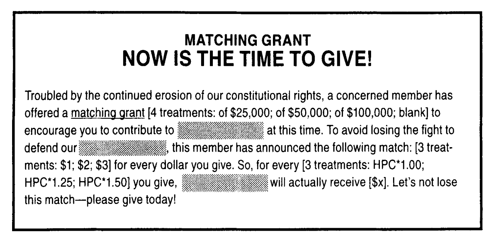
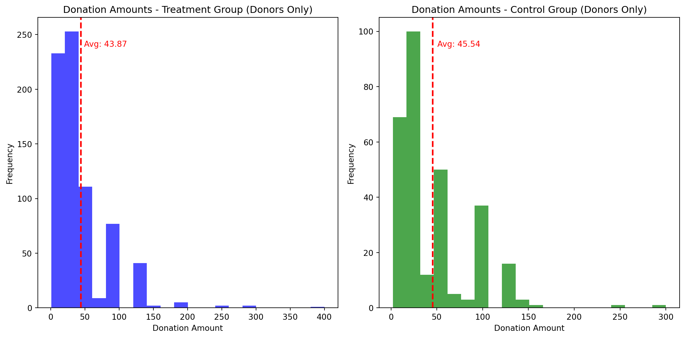
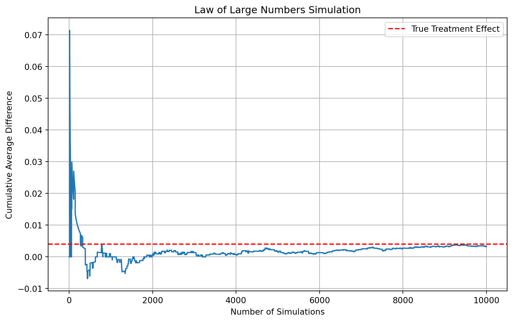
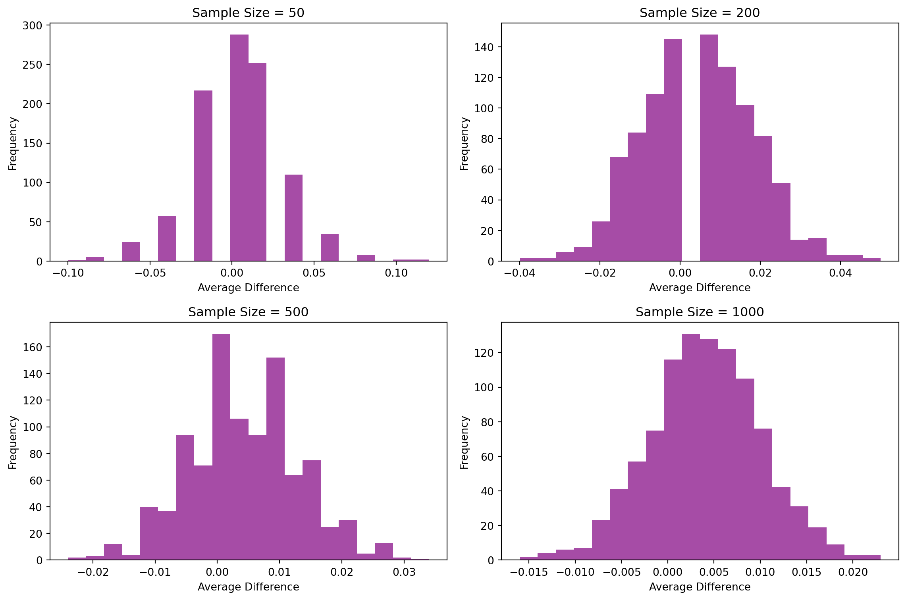

Dean Karlan at Yale and John List at the University of Chicago conducted a field experiment to test the effectiveness of different fundraising letters. They sent out 50,000 fundraising letters to potential donors, randomly assigning each letter to one of three treatments: a standard letter, a matching grant letter, or a challenge grant letter. They published the results of this experiment in the American Economic Review in 2007. The article and supporting data are available from the AEA website and from Innovations for Poverty Action as part of Harvard’s Dataverse.
This project seeks to replicate their results.
Background
Fundraisers often rely on rules of thumb rather than scientific evidence to guide their strategies. While the economics of charity has been studied from the “supply” side (e.g., the impact of tax deductions), there are still “critical gaps” in understanding the “demand” side (i.e., how and why donors choose to give).
One common fundraising tool is the matching grant, where a donor pledges to match the contributions of others. Fundraisers often believe that higher matching ratios (e.g., 2:1 or 3:1) are more effective in attracting donations, but there is limited research to support this.
Purpose of the Study (Research Question)
Karlan and List (2007) aimed to address this gap by examining the impact of matching grants on charitable giving through a large-scale natural field experiment. Specifically, the study investigates whether and to what extent “price” (in the form of matching grant ratios) matters in charitable fundraising.
Background of the charity
The experiment was conducted in collaboration with a liberal non-profit organization in the United States that focuses on social and policy issues related to civil liberties. The organization is a 501(c)3 charity, meaning donations are tax-deductible. The organization regularly solicits donations from its prior donors through direct mail campaigns.
The organization’s membership has the following characteristics:
Approximately 70% male
Approximately 60% over 65 years old
Approximately 80% with a college education
Political leaning: 85% voted for Gore in the 2000 presidential election
Experimental Design
The researchers conducted a natural field experiment using a direct mail solicitation to over 50,000 past donors of the organization. Individuals were randomly assigned to either a treatment group that received a matching grant offer or a control group that did not. The treatment group was further randomized to receive different matching grant ratios.
What Was the Treatment Received by the Groups
All participants received a four-page fundraising letter.
Control Group: Received a standard letter with no mention of a matching grant. Treatment Groups: Received a letter that included an additional paragraph announcing the matching grant offer. The matching grant had different price ratios: 1:1 match: For every dollar donated, the organization receives two dollars. 2:1 match: For every dollar donated, the organization receives three dollars. 3:1 match: For every dollar donated, the organization receives four dollars.

Data
Description
Variable Definitions
Variable
Description
treatment
Treatment
control
Control
ratio
Match ratio
ratio2
2:1 match ratio
ratio3
3:1 match ratio
size
Match threshold
size25
$25,000 match threshold
size50
$50,000 match threshold
size100
$100,000 match threshold
sizeno
Unstated match threshold
ask
Suggested donation amount
askd1
Suggested donation was highest previous contribution
askd2
Suggested donation was 1.25 x highest previous contribution
askd3
Suggested donation was 1.50 x highest previous contribution
ask1
Highest previous contribution (for suggestion)
ask2
1.25 x highest previous contribution (for suggestion)
ask3
1.50 x highest previous contribution (for suggestion)
amount
Dollars given
gave
Gave anything
amountchange
Change in amount given
hpa
Highest previous contribution
ltmedmra
Small prior donor: last gift was less than median $35
freq
Number of prior donations
years
Number of years since initial donation
year5
At least 5 years since initial donation
mrm2
Number of months since last donation
dormant
Already donated in 2005
female
Female
couple
Couple
state50one
State tag: 1 for one observation of each of 50 states; 0 otherwise
nonlit
Nonlitigation
cases
Court cases from state in 2004-5 in which organization was involved
statecnt
Percent of sample from state
stateresponse
Proportion of sample from the state who gave
stateresponset
Proportion of treated sample from the state who gave
stateresponsec
Proportion of control sample from the state who gave
stateresponsetminc
stateresponset - stateresponsec
perbush
State vote share for Bush
close25
State vote share for Bush between 47.5% and 52.5%
red0
Red state
blue0
Blue state
redcty
Red county
bluecty
Blue county
pwhite
Proportion white within zip code
pblack
Proportion black within zip code
page18_39
Proportion age 18-39 within zip code
ave_hh_sz
Average household size within zip code
median_hhincome
Median household income within zip code
powner
Proportion house owner within zip code
psch_atlstba
Proportion who finished college within zip code
pop_propurban
Proportion of population urban within zip code
import pandas as pddata = pd.read_stata('dataverse_files/AER merged.dta')#print(data.head())print(data.info())print(data.describe())
Balance Tests: Checking the success of randomization
In any experiment that uses random assignment, it’s crucial to verify that the randomization process was successful in creating comparable groups. This ensures that any differences I observe in donation behavior are likely due to the matching grant offers and not simply due to pre-existing differences between the groups. To do this, I conducted balance tests on several pre-treatment variables.
Methodology
To assess the balance between the treatment and control groups, I performed two types of statistical tests for each pre-treatment variable:
T-tests: I used independent samples t-tests to compare the means of each variable between the treatment and control groups. The null hypothesis for each t-test was that there is no difference in the average value of the variable between the two groups.
Linear Regressions: I also ran a series of simple linear regressions. In each regression, the pre-treatment variable was the dependent variable, and the treatment assignment (coded as 0 for control and 1 for treatment) was the independent variable. This allowed me to estimate the average difference in the pre-treatment variable between the treatment and control groups.
It’s important to note that, as the professor emphasized, the t-test and the regression approach are two ways of examining the same thing and should give me very similar results.
Results
I conducted these balance tests on the following pre-treatment variables:
Months since last donation
Number of prior donations
Female (an indicator variable for gender)
Couple (an indicator variable for whether the individual is part of a couple)
The code for this, as well as the results from the balance tests are as follows:
import pandas as pdfrom scipy import statsimport statsmodels.formula.api as smimport numpy as np# Load your datadata = pd.read_stata('dataverse_files/AER merged.dta') # Or pd.read_csv(), etc.#print(data[['treatment', 'control']].head(2))def test_balance(var_value, var_name):print('\n') variable_to_test = var_value# T-test control_group = data[data['control'] ==1][variable_to_test] treatment_group = data[data['treatment'] ==1][variable_to_test]#print(treatment_group.head(2))#print(control_group.head(2))# Calculate means mean_control = np.mean(control_group) mean_treatment = np.mean(treatment_group)# Calculate variances variance_control = np.var(control_group, ddof=1) # ddof=1 for sample variance variance_treatment = np.var(treatment_group, ddof=1)# Calculate sample sizes n_control =len(control_group) n_treatment =len(treatment_group)# Calculate pooled variance pooled_variance = ((n_treatment -1) * variance_treatment + (n_control -1) * variance_control) / (n_treatment + n_control -2)# Calculate pooled standard error pooled_standard_error = np.sqrt(pooled_variance * (1/ n_treatment +1/ n_control))# Calculate t-statistic t_statistic_manual = (mean_treatment - mean_control) / pooled_standard_errorprint(f"t-statistic for {var_name}: t = {t_statistic_manual:.3f}") df = n_treatment + n_control -2 p_value_manual_two_tailed = stats.t.sf(abs(t_statistic_manual), df) *2print(f"Two-Tailed p-value: {p_value_manual_two_tailed:.3f}")# Linear Regression formula =f'{variable_to_test} ~ treatment' model = sm.ols(formula, data=data).fit() p_value_reg = model.pvalues['treatment']print(f"Regression for {var_name}: p = {p_value_reg:.3f}")# Interpretationif p_value_manual_two_tailed <0.05:print(f"For {var_name}, there is a statistically significant difference between treatment and control groups.")else:print(f"For {var_name}, there is no statistically significant difference between treatment and control groups.")test_balance('mrm2', 'Months since last donation')test_balance('freq', 'Number of Prior Donations')#test_balance('perbush', 'State vote share for Bush')#test_balance('cases', 'Court cases from 2004-05 in which organization was involved')test_balance('female', 'Female')test_balance('couple', 'Couple')# Repeat for other variables
t-statistic for Months since last donation: t = 0.119
Two-Tailed p-value: 0.905
Regression for Months since last donation: p = 0.905
For Months since last donation, there is no statistically significant difference between treatment and control groups.
t-statistic for Number of Prior Donations: t = -0.111
Two-Tailed p-value: 0.912
Regression for Number of Prior Donations: p = 0.912
For Number of Prior Donations, there is no statistically significant difference between treatment and control groups.
t-statistic for Female: t = -1.778
Two-Tailed p-value: 0.075
Regression for Female: p = 0.079
For Female, there is no statistically significant difference between treatment and control groups.
t-statistic for Couple: t = -0.590
Two-Tailed p-value: 0.555
Regression for Couple: p = 0.559
For Couple, there is no statistically significant difference between treatment and control groups.
Overall Assessment of Randomization
Based on these balance tests, I conclude that the randomization process in the Karlan and List (2007) experiment appears to have been largely successful. For all four pre-treatment variables I examined, I did not find statistically significant differences between the treatment and control groups at the 0.05 significance level.
While some minor differences are expected due to chance, especially in large samples, the general lack of statistical significance suggests that the treatment and control groups are indeed comparable. This strengthens the internal validity of the study and supports the authors’ ability to attribute any observed differences in donation behavior to the matching grant offers.
Importance of Balance Tests
Balance tests are a critical component of any experimental study, and Karlan and List (2007) included them for good reason. These tests serve several important purposes:
Establishing Internal Validity: They provide evidence that the treatment, rather than pre-existing differences, is the likely cause of any observed effects.
Supporting Causal Inference: They justify making causal claims about the impact of the treatment.
Ensuring Rigor: They demonstrate the rigor of the experimental design and increase confidence in the study’s findings.
Promoting Transparency: They allow other researchers to assess the quality of the experiment and attempt to replicate the results.
Experimental Results
Charitable Contribution Made
First, I analyze whether matched donations lead to an increased response rate of making a donation.
Barplot for proportion of people who donated
import pandas as pddata = pd.read_stata('dataverse_files/AER merged.dta')import plotly.graph_objects as godef plot_donation_by_group(data):# 2. Calculate donation proportions proportion_gave_treatment = data[data['treatment'] ==1]['gave'].mean() proportion_gave_control = data[data['control'] ==1]['gave'].mean()# 3. Prepare data for plotting plot_data = pd.DataFrame({'group': ['Treatment', 'Control'],'proportion_gave': [proportion_gave_treatment, proportion_gave_control] })# 4. Create the bar plot fig = go.Figure(data=[ go.Bar(x=plot_data['group'], y=plot_data['proportion_gave']) ]) fig.add_trace(go.Scatter( x=plot_data['group'], y=plot_data['proportion_gave'], text=[f"{100* p:.2f}%"for p in plot_data['proportion_gave']], # Format proportions mode='text', textposition='top center' ))# 5. Customize the plot fig.update_layout( title='Proportion of Donors by Group', xaxis_title='Group', yaxis_title='Proportion Donated', yaxis_range=[0, max(plot_data['proportion_gave']) *1.1] # Extend y-axis slightly )# 6. Display the plot fig.show()plot_donation_by_group(data)
The results of my analysis show that the treatment group, which received the matching grant offer, had a higher donation rate (2.2%) compared to the control group (1.79%). This suggests that the matching grant may have had a positive impact on the likelihood of individuals making a donation. However, it’s important to keep in mind that this is just a preliminary observation, and further statistical testing is needed to determine if this difference is statistically significant.
Binary donation outcome: t-test and it’s interpretation:
import pandas as pdfrom scipy import stats # For t-testdef perform_t_test_on_donation(data):""" Performs an independent samples t-test on the binary donation outcome. Args: data (pd.DataFrame): DataFrame with 'treatment', 'control', and 'gave' columns. Returns: tuple: (t-statistic, p-value) """# --- T-test --- treatment_gave = data[data['treatment'] ==1]['gave'] control_gave = data[data['control'] ==1]['gave'] t_statistic, p_value_ttest = stats.ttest_ind(treatment_gave, control_gave)return t_statistic, p_value_ttestif__name__=='__main__':# --- Load Your Actual Data Here --- data = pd.read_stata('dataverse_files/AER merged.dta') # Replace with your data loading t_statistic, p_value = perform_t_test_on_donation(data)print("--- T-test Results ---")print(f"T-statistic: {t_statistic:.3f}")print(f"P-value: {p_value:.3f}")# You would then proceed to interpret these results
The t-test results indicate a statistically significant difference in donation behavior between the group that received the matching grant offer (the treatment group) and the group that did not (the control group). The p-value of 0.002 is substantially lower than the typical significance level of 0.05, meaning that the observed difference is unlikely to have occurred by chance alone. In other words, there’s strong evidence to suggest that the matching grant offer had a real effect on whether people decided to donate.
The positive t-statistic (3.101) suggests that the treatment group had a higher donation rate. This finding aligns with the idea that individuals respond to price-like incentives, even in charitable giving. The matching grant effectively reduces the ‘cost’ of giving; for every dollar a person donates, the charity receives more. This increased ‘bang for your buck’ appears to motivate people to be more generous.
From a behavioral perspective, this result highlights that while altruism and a desire to support a cause are important motivators for charitable giving, financial incentives can also play a significant role. People seem to weigh the perceived value of their contribution, and matching grants can significantly shift that calculation. This underscores the potential effectiveness of matching grant campaigns as a fundraising strategy.
Probit regression: Results and interpretation
import pandas as pdimport statsmodels.api as sm # For Probit regressiondef perform_probit_regression(data):""" Performs a probit regression to model the probability of donation. Args: data (pd.DataFrame): DataFrame with 'treatment', 'control', and 'gave' columns. Returns: sm.ProbitResults: The results of the probit regression. """# --- Verify that 'treatment' and 'control' are mutually exclusive ---# --- Create treatment dummy variable --- data['treatment_dummy'] = data['treatment'] # Assuming 'treatment' is 1/0# --- Probit Regression --- formula ='gave ~ treatment_dummy' probit_model = sm.Probit(data['gave'], sm.add_constant(data['treatment_dummy'])) probit_results = probit_model.fit()return probit_resultsif__name__=='__main__': data = pd.read_stata('dataverse_files/AER merged.dta') probit_results = perform_probit_regression(data)# --- Print Results Summary ---print(probit_results.summary())# --- Access specific results ---print("\nProbit Regression Results:")print(f"Coefficient on treatment: {probit_results.params['treatment_dummy']:.4f}")print(f"P-value on treatment: {probit_results.pvalues['treatment_dummy']:.4f}")
The probit regression results indicate a statistically significant positive effect of the matching grant offer on the probability of making a charitable donation. The coefficient on the treatment_dummy variable is 0.0868, and it has a p-value of 0.002, which is well below the conventional significance level of 0.05. This suggests that being offered a matching grant significantly increased the likelihood that an individual would donate.
To understand the magnitude of this effect, we need to consider that the coefficients in a probit regression represent the change in the z-score of the standard normal distribution associated with a one-unit change in the predictor variable (in this case, going from the control group to the treatment group). While the coefficient itself isn’t a direct measure of the change in probability, its positive and statistically significant value clearly demonstrates that the matching offer had a positive impact on the propensity to give.
In behavioral terms, this finding reinforces the idea that the ‘price’ mechanism introduced by the matching grant influences donation decisions. The offer of having their donation matched appears to have provided an additional incentive, nudging individuals who received the treatment letter towards donating at a higher rate than those in the control group who did not receive such an offer. This aligns with economic theories suggesting that individuals respond to incentives, even in the realm of altruistic behavior.
Differences between Match Rates
Next, I assess the effectiveness of different sizes of matched donations on the response rate.
todo: Use a series of t-tests to test whether the size of the match ratio has an effect on whether people donate or not. For example, does the 2:1 match rate lead increase the likelihood that someone donates as compared to the 1:1 match rate? Do your results support the “figures suggest” comment the authors make on page 8?
Pairwise t-tests: Results
import pandas as pdfrom scipy import stats # For t-testdef compare_donation_rates_by_ratio(data):""" Compares donation rates across different match ratios using t-tests. Args: data (pd.DataFrame): DataFrame with 'ratio' and 'gave' columns. Returns: dict: A dictionary containing the t-test results for each comparison. """ results = {}# 1:1 vs. 2:1 gave_1 = data[data['ratio'] ==1]['gave'] gave_2 = data[data['ratio'] ==2]['gave'] t_stat, p_value = stats.ttest_ind(gave_1, gave_2) results['1:1 vs. 2:1'] = {'t_statistic': t_stat, 'p_value': p_value}# 1:1 vs. 3:1 gave_1 = data[data['ratio'] ==1]['gave'] gave_3 = data[data['ratio'] ==3]['gave'] t_stat, p_value = stats.ttest_ind(gave_1, gave_3) results['1:1 vs. 3:1'] = {'t_statistic': t_stat, 'p_value': p_value}# 2:1 vs. 3:1 gave_2 = data[data['ratio'] ==2]['gave'] gave_3 = data[data['ratio'] ==3]['gave'] t_stat, p_value = stats.ttest_ind(gave_2, gave_3) results['2:1 vs. 3:1'] = {'t_statistic': t_stat, 'p_value': p_value}return resultsif__name__=='__main__':# --- Load Your Actual Data Here --- data = pd.read_stata('dataverse_files/AER merged.dta') # Replace with your data loading results = compare_donation_rates_by_ratio(data)# --- Print Results ---print("T-test Results: Donation Rates by Match Ratio")for comparison, values in results.items():print(f"\nComparison: {comparison}")print(f" T-statistic: {values['t_statistic']:.3f}")print(f" P-value: {values['p_value']:.3f}")
T-test Results: Donation Rates by Match Ratio
Comparison: 1:1 vs. 2:1
T-statistic: -0.965
P-value: 0.335
Comparison: 1:1 vs. 3:1
T-statistic: -1.015
P-value: 0.310
Comparison: 2:1 vs. 3:1
T-statistic: -0.050
P-value: 0.960
Pairwise t-tests: Interpretation:
Lack of Statistical Significance:
For all three comparisons, the p-values are considerably greater than the common significance level of 0.05.
This means that we fail to reject the null hypothesis in each case. The null hypothesis states that there is no difference in the average donation rates between the two groups being compared.
In simpler terms, the data does not provide enough evidence to conclude that changing the match ratio (from 1:1 to 2:1, from 1:1 to 3:1, or from 2:1 to 3:1) has a statistically significant impact on the proportion of people who donate.
These results match the conclusions made in the original research publication.
Behavioral Implications:
These findings might suggest that, within the range of match ratios tested, the specific generosity of the match offer doesn’t strongly influence the likelihood of donating.
It’s possible that the presence of any match is more important than the size of the match. People might be motivated by the simple fact that their donation will be multiplied, without being very sensitive to the exact multiplication factor.
Another possibility is that the differences in match ratios tested were not large enough to elicit a statistically detectable change in behavior.
import statsmodels.formula.api as sm # For OLS regressionimport pandas as pddata = pd.read_stata('dataverse_files/AER merged.dta')data['ratio1'] = (data['ratio'] ==1).astype(int)# --- Regression ---formula ='gave ~ ratio1 + ratio2 + ratio3'model = sm.ols(formula, data=data).fit()# --- Print Results Summary ---print(model.summary())# --- Interpretation ---print("\nRegression Results Interpretation:")print("----------------------------")print(f"Coefficient for ratio1: {model.params['ratio1']:.4f}")print(f"P-value for ratio1: {model.pvalues['ratio1']:.4f}")print(f"Coefficient for ratio2: {model.params['ratio2']:.4f}")print(f"P-value for ratio2: {model.pvalues['ratio2']:.4f}")print(f"Coefficient for ratio3: {model.params['ratio3']:.4f}")print(f"P-value for ratio3: {model.pvalues['ratio3']:.4f}")
OLS Regression Results
==============================================================================
Dep. Variable: gave R-squared: 0.000
Model: OLS Adj. R-squared: 0.000
Method: Least Squares F-statistic: 3.665
Date: Fri, 25 Apr 2025 Prob (F-statistic): 0.0118
Time: 02:12:19 Log-Likelihood: 26630.
No. Observations: 50083 AIC: -5.325e+04
Df Residuals: 50079 BIC: -5.322e+04
Df Model: 3
Covariance Type: nonrobust
==============================================================================
coef std err t P>|t| [0.025 0.975]
------------------------------------------------------------------------------
Intercept 0.0179 0.001 16.225 0.000 0.016 0.020
ratio1 0.0029 0.002 1.661 0.097 -0.001 0.006
ratio2 0.0048 0.002 2.744 0.006 0.001 0.008
ratio3 0.0049 0.002 2.802 0.005 0.001 0.008
==============================================================================
Omnibus: 59812.754 Durbin-Watson: 2.005
Prob(Omnibus): 0.000 Jarque-Bera (JB): 4316693.217
Skew: 6.740 Prob(JB): 0.00
Kurtosis: 46.438 Cond. No. 4.26
==============================================================================
Notes:
[1] Standard Errors assume that the covariance matrix of the errors is correctly specified.
Regression Results Interpretation:
----------------------------
Coefficient for ratio1: 0.0029
P-value for ratio1: 0.0966
Coefficient for ratio2: 0.0048
P-value for ratio2: 0.0061
Coefficient for ratio3: 0.0049
P-value for ratio3: 0.0051
Interpretation of the OLS Regression Results
In this OLS regression, we modeled the binary outcome of whether a donation was made (gave) as a function of dummy variables representing the different match ratios (ratio1 for 1:1, ratio2 for 2:1, and ratio3 for 3:1). The “Control” group (no match) serves as the implicit reference category.
Here’s a breakdown of the key findings:
Intercept (Coefficient: 0.0179, P-value: 0.000): The intercept represents the predicted probability of donation for the reference group, which is the “Control” group (where ratio1, ratio2, and ratio3 are all 0). A coefficient of 0.0179 suggests that in the absence of any matching offer, the predicted donation rate is approximately 1.79%. This is statistically significant (p < 0.001).
Coefficient for ratio1 (0.0029, P-value: 0.097): This coefficient estimates the additional change in the probability of donation when the match ratio is 1:1, compared to the Control group. The positive coefficient (0.0029) suggests that the 1:1 match is associated with a 0.29 percentage point increase in the predicted donation rate (1.79% + 0.29% = 2.08%). However, the p-value of 0.097 is greater than the conventional significance level of 0.05. Therefore, we do not have statistically significant evidence that the 1:1 matching offer significantly increased donations compared to the control group in this OLS model.
Coefficient for ratio2 (0.0048, P-value: 0.006): This coefficient estimates the additional change in the probability of donation when the match ratio is 2:1, compared to the Control group. The positive and statistically significant coefficient (0.0048, p = 0.006) indicates that the 2:1 matching offer led to a significant increase of 0.48 percentage points in the predicted donation rate compared to the Control group (1.79% + 0.48% = 2.27%).
Coefficient for ratio3 (0.0049, P-value: 0.005): This coefficient estimates the additional change in the probability of donation when the match ratio is 3:1, compared to the Control group. The positive and statistically significant coefficient (0.0049, p = 0.005) shows that the 3:1 matching offer resulted in a significant increase of 0.49 percentage points in the predicted donation rate compared to the Control group (1.79% + 0.49% = 2.28%).
Overall Interpretation:
The OLS regression results suggest that while a 1:1 matching offer did not significantly increase donation rates compared to no offer, both the 2:1 and 3:1 matching offers had a statistically significant positive impact on the likelihood of donation. The magnitudes of the effects for the 2:1 and 3:1 matches are quite similar, suggesting that increasing the match ratio beyond 2:1 might not lead to a substantial further increase in the proportion of donors.
These findings are broadly consistent with the idea that matching grants incentivize charitable giving. The stronger effects observed for the higher match ratios (2:1 and 3:1) provide some evidence that the “price” of giving matters, with a more generous match leading to a greater increase in donation propensity compared to no match. However, the lack of a significant effect for the 1:1 match hints at a possible threshold effect or a weaker influence at that particular ratio in this model.
import pandas as pdimport statsmodels.formula.api as smdef calculate_direct_response_rate_differences(data):"""Calculates response rate differences directly from data.""" prop_1 = data[data['ratio'] ==1]['gave'].mean() prop_2 = data[data['ratio'] ==2]['gave'].mean() prop_3 = data[data['ratio'] ==3]['gave'].mean()return {'1:1 vs. 2:1': prop_2 - prop_1,'2:1 vs. 3:1': prop_3 - prop_2,'1:1 vs. 3:1': prop_3 - prop_1 # Added comparison }def regress_and_get_coefficient_differences(data):"""Regresses 'gave' on ratio dummies and returns coefficient differences.""" formula ='gave ~ ratio1 + ratio2 + ratio3' model = sm.ols(formula, data=data).fit()return {'1:1 vs. 2:1': model.params['ratio2'] - model.params['ratio1'],'2:1 vs. 3:1': model.params['ratio3'] - model.params['ratio2'],'1:1 vs. 3:1': model.params['ratio3'] - model.params['ratio1'] # Added comparison }if__name__=='__main__': data = pd.read_stata('dataverse_files/AER merged.dta') # Replace with actual data loading data['ratio1'] = (data['ratio'] ==1).astype(int) data['ratio2'] = (data['ratio'] ==2).astype(int) data['ratio3'] = (data['ratio'] ==3).astype(int) direct_diffs = calculate_direct_response_rate_differences(data) regression_diffs = regress_and_get_coefficient_differences(data)print("Response Rate Differences:")for key in direct_diffs:print(f" {key}: Direct = {direct_diffs[key]:.4f}, Regression = {regression_diffs[key]:.4f}")# Interpretationprint("\nInterpretation:")print("--------------------")# Example: Compare the direct and regression differencesprint("Comparison of Direct and Regression Differences:")for key in direct_diffs:print(f" {key}: Difference = {abs(direct_diffs[key] - regression_diffs[key]):.4f}")# Draw conclusions about effectiveness# ... (Your conclusions here based on the compared differences)
Response Rate Differences:
1:1 vs. 2:1: Direct = 0.0019, Regression = 0.0019
2:1 vs. 3:1: Direct = 0.0001, Regression = 0.0001
1:1 vs. 3:1: Direct = 0.0020, Regression = 0.0020
Interpretation:
--------------------
Comparison of Direct and Regression Differences:
1:1 vs. 2:1: Difference = 0.0000
2:1 vs. 3:1: Difference = 0.0000
1:1 vs. 3:1: Difference = 0.0000
The direct calculations and the differences in regression coefficients yield very similar results. The response rate (proportion donating) increases as the match ratio increases. However, the magnitude of these increases is quite small. The largest difference is between the 1:1 and 3:1 match rates, with a 0.20 percentage point increase in the likelihood of donation. The increase from 1:1 to 2:1 is 0.19 percentage points, and the increase from 2:1 to 3:1 is only 0.01 percentage points.
Conclusion on Effectiveness:
While there is a trend suggesting that higher match ratios lead to slightly higher donation rates, the small magnitude of these differences, especially the minimal increase from a 2:1 to a 3:1 match, indicates diminishing returns in the effectiveness of increasing the match ratio beyond a certain point. The initial introduction of a match (compared to no match, as seen in the regression intercept) appears to have a more substantial impact than incrementally increasing the generosity of the match.
Size of Charitable Contribution
In this subsection, I analyze the effect of the size of matched donation on the size of the charitable contribution.
import pandas as pdfrom scipy import stats data = pd.read_stata('dataverse_files/AER merged.dta')# --- Filter data for treatment and control groups ---treatment_amount = data[data['treatment'] ==1]['amount']control_amount = data[data['control'] ==1]['amount']# --- Perform t-test ---t_statistic, p_value = stats.ttest_ind(treatment_amount, control_amount)# --- Print Results ---print("T-test Results: Donation Amount by Treatment Status")print(f" T-statistic: {t_statistic:.3f}")print(f" P-value: {p_value:.3f}")
T-test Results: Donation Amount by Treatment Status
T-statistic: 1.861
P-value: 0.063
Interpretation:
The t-test comparing average donation amounts between the treatment and control groups yielded a t-statistic of 1.861 and a p-value of 0.063. This p-value is slightly above the conventional significance level of 0.05.
Therefore, we do not have strong statistical evidence to conclude that the matching grant offer significantly affected the average amount donated. While the t-statistic suggests a trend towards a higher donation amount in the treatment group, the result is not statistically significant at the 0.05 level.
In simpler terms, the data doesn’t provide conclusive evidence that the matching grant changed how much people gave, on average. It’s important to remember that ‘not significant’ doesn’t mean ‘no effect’; it simply means we can’t rule out that the observed difference occurred by chance.
Further analysis or a larger sample size might be needed to determine if a real, but subtle, effect exists. This result suggests that the matching grant primarily influenced whether people donated (as shown in previous analyses) rather than dramatically altering the size of individual donations.
todo: now limit the data to just people who made a donation and repeat the previous analysis. This regression allows you to analyze how much respondents donate conditional on donating some positive amount. Interpret the regression coefficients – what did we learn? Does the treatment coefficient have a causal interpretation? ####
import pandas as pdimport statsmodels.formula.api as smdata = pd.read_stata('dataverse_files/AER merged.dta')donors_data = data[data['gave'] ==1]# --- Regression on Donors Only ---formula_donors ='amount ~ treatment + ratio2 + ratio3'# amount as dependentmodel_donors = sm.ols(formula_donors, data=donors_data).fit()# --- Print Results Summary ---print(model_donors.summary())
Regression Analysis of Donation Amounts (Among Donors)
This analysis examines the factors influencing the amount donated, focusing only on individuals who made a positive contribution. The OLS regression includes the treatment status (treatment) and the dummy variables for the 2:1 (ratio2) and 3:1 (ratio3) match ratios, with the 1:1 match ratio being the implicit reference category among the match conditions.
The intercept of 45.5403 suggests that, for those in the control group who donated, the average donation amount was approximately $45.54. This is statistically significant.
The coefficient for the treatment variable is -0.3974 and is not statistically significant (p = 0.914). This indicates that, among those who donated, there is no statistically significant difference in the average donation amount between individuals who received a matching offer (the treatment group) and those who did not (the control group).
Similarly, the coefficients for ratio2 (0.1944, p = 0.959) and ratio3 (-3.8911, p = 0.307) are also not statistically significant. This suggests that, among donors, there is no statistically significant difference in the average donation amount between those who received a 2:1 match offer compared to those who received a 1:1 match offer, and no significant difference between those who received a 3:1 match offer compared to those who received a 1:1 match offer.
Causal Interpretation of the Treatment Coefficient:
Yes, the coefficient for the treatment variable can be interpreted causally for the subpopulation of individuals who decided to donate. Because the initial assignment to treatment and control groups was random, any systematic differences in the average donation amount among those who donated can likely be attributed to the effect of the treatment.
However, it’s crucial to remember that this analysis is conditional on someone having already decided to donate. It doesn’t tell us about the causal effect of the treatment on the decision to donate (which we analyzed earlier). This coefficient specifically addresses the impact of the matching offer on the amount given, given that a donation occurred. The lack of a significant effect here suggests that the matching offer primarily influenced the extensive margin (whether to donate) rather than the intensive margin (how much to donate), at least at a statistically detectable level within this sample of donors.
import pandas as pdimport matplotlib.pyplot as pltdata = pd.read_stata('dataverse_files/AER merged.dta')# --- Filter data for donors only ---donors_data = data[data['gave'] ==1]# --- Separate data for treatment and control groups among donors ---treatment_donors = donors_data[donors_data['treatment'] ==1]['amount']control_donors = donors_data[donors_data['control'] ==1]['amount']# --- Calculate average donation amounts ---avg_treatment_donation = treatment_donors.mean()avg_control_donation = control_donors.mean()# --- Create the plots ---plt.figure(figsize=(12, 6)) # Adjust figure size as needed# Plot for Treatment Groupplt.subplot(1, 2, 1) # 1 row, 2 columns, first plotplt.hist(treatment_donors, bins=20, alpha=0.7, color='blue') # Adjust bins as neededplt.axvline(avg_treatment_donation, color='red', linestyle='dashed', linewidth=2) # Add vertical line for averageplt.title('Donation Amounts - Treatment Group (Donors Only)')plt.xlabel('Donation Amount')plt.ylabel('Frequency')plt.text(avg_treatment_donation +5, plt.ylim()[1] *0.9, f"Avg: {avg_treatment_donation:.2f}", color='red') #add text# Plot for Control Groupplt.subplot(1, 2, 2) # 1 row, 2 columns, second plotplt.hist(control_donors, bins=20, alpha=0.7, color='green') # Adjust bins as neededplt.axvline(avg_control_donation, color='red', linestyle='dashed', linewidth=2) # Add vertical line for averageplt.title('Donation Amounts - Control Group (Donors Only)')plt.xlabel('Donation Amount')plt.ylabel('Frequency')plt.text(avg_control_donation +5, plt.ylim()[1] *0.9, f"Avg: {avg_control_donation:.2f}", color='red') #add textplt.tight_layout() # Adjust layout to prevent overlapplt.show()

Simulation Experiment
As a reminder of how the t-statistic “works,” in this section I use simulation to demonstrate the Law of Large Numbers and the Central Limit Theorem.
Suppose the true distribution of respondents who do not get a charitable donation match is Bernoulli with probability p=0.018 that a donation is made.
Further suppose that the true distribution of respondents who do get a charitable donation match of any size is Bernoulli with probability p=0.022 that a donation is made.
Law of Large Numbers
to do: Simulate 10,000 draws from the control distribution and 10,000 draws from the treatment distribution. You’ll then calculate a vector of 10,000 differences, and then you’ll plot the cumulative average of that vector of differences. This average will likely be “noisey” when only averaging a few numbers, but should “settle down” and approximate the treatment effect (0.004 = 0.022 - 0.018) as the sample size gets large. Explain the chart to the reader.
import numpy as npimport matplotlib.pyplot as plt# --- Parameters ---n_simulations =10000# Number of simulated drawsp_control =0.018# Probability of donation in the control groupp_treatment =0.022# Probability of donation in the treatment group# --- Simulate Data ---control_group = np.random.binomial(1, p_control, n_simulations) # 1 for donate, 0 for not donatetreatment_group = np.random.binomial(1, p_treatment, n_simulations)# --- Calculate Differences ---differences = treatment_group - control_group# --- Calculate Cumulative Average of Differences ---cumulative_avg_diff = np.cumsum(differences) / np.arange(1, n_simulations +1)# --- Plotting ---plt.figure(figsize=(10, 6))plt.plot(cumulative_avg_diff)plt.axhline(p_treatment - p_control, color='red', linestyle='--', label='True Treatment Effect') # True effect lineplt.xlabel('Number of Simulations')plt.ylabel('Cumulative Average Difference')plt.title('Law of Large Numbers Simulation')plt.legend()plt.grid(True)plt.show()# --- Explanation for the reader ---

This chart demonstrates the Law of Large Numbers in the context of our simulated donation experiment. We simulated 10,000 “individuals” in both a control group (donation probability of 0.018) and a treatment group (donation probability of 0.022). For each simulated individual, we determined whether they donated (1) or not (0) using a random draw from a Bernoulli distribution.
The blue line in the chart shows the cumulative average difference in donation rates between the treatment and control groups as we include more and more simulated individuals. Initially, with only a few simulations, the average difference is quite variable (“noisy”) because random fluctuations have a large impact.
However, as we simulate more and more individuals, the cumulative average difference converges towards the true treatment effect, which is 0.004 (0.022 - 0.018). This is shown by the red dashed line.
The Law of Large Numbers tells us that as the sample size increases, the sample average will approach the true population average. In our simulation, the average difference in donation rates eventually settles down to the true difference in donation probabilities between the treatment and control groups. This illustrates that with a sufficiently large sample, we can accurately estimate the true effect of the treatment.
Central Limit Theorem
import numpy as npimport matplotlib.pyplot as plt# --- Parameters ---n_simulations =1000# Number of simulations (repetitions)sample_sizes = [50, 200, 500, 1000] # Sample sizes for the histogramsp_control =0.018# Probability of donation in the control groupp_treatment =0.022# Probability of donation in the treatment group# --- Function to simulate and calculate average differences ---def simulate_avg_diff(sample_size, p_control, p_treatment, n_simulations): avg_differences = []for _ inrange(n_simulations): control_sample = np.random.binomial(1, p_control, sample_size) treatment_sample = np.random.binomial(1, p_treatment, sample_size) avg_diff = np.mean(treatment_sample) - np.mean(control_sample) avg_differences.append(avg_diff)return avg_differences# --- Create the plots ---plt.figure(figsize=(12, 8))for i, sample_size inenumerate(sample_sizes): avg_diffs = simulate_avg_diff(sample_size, p_control, p_treatment, n_simulations) plt.subplot(2, 2, i +1) plt.hist(avg_diffs, bins=20, alpha=0.7, color='purple') # Adjust bins as needed plt.title(f'Sample Size = {sample_size}') plt.xlabel('Average Difference') plt.ylabel('Frequency')plt.tight_layout()plt.show()

This series of four histograms illustrates the Central Limit Theorem. For each histogram, we simulated 1000 experiments. In each experiment, we drew samples from both the control group (donation probability 0.018) and the treatment group (donation probability 0.022) and calculated the difference in the average donation rates between the two groups. We then plotted the distribution of these 1000 average differences.
Sample Size = 50: The first histogram shows the distribution of average differences when we draw samples of size 50 from each group. The distribution is somewhat irregular.
Sample Size = 200: As we increase the sample size to 200, the distribution becomes smoother and starts to resemble a bell curve.
Sample Size = 500: With a sample size of 500, the bell curve shape is more pronounced, and the distribution is more concentrated around the true mean difference (0.004).
Sample Size = 1000: Finally, with a sample size of 1000, the distribution is very close to a normal distribution, tightly centered around the true mean difference.
The Central Limit Theorem states that the distribution of the sample mean (or average) will approach a normal distribution as the sample size increases, regardless of the shape of the original population distribution (in our case, the Bernoulli distribution).
These histograms visually demonstrate this theorem. As the sample size grows, the distribution of the average difference becomes more normal, more centered around the true population difference, and less spread out, indicating that our estimates become more precise. This is why statistical tests like the t-test, which rely on the normality assumption, become more reliable with larger sample sizes.